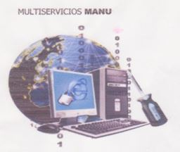

"Mi objetivo profesional es aportar a la sociedad lo aprendido con mi formacion, ademas integrar un
equipo donde pueda poner en practica los conocimientos adquiridos duranre mis años de formacion,
desarrollarme, crecer en lo profesional y personal en funcion a mis logros y aportes"
DATOS PERSONALES
PERFIL LABORAL
FORMACIÓN ACADÉMICA

INSTITUCION UNIVERSITARIA DE ENVIGADO |

CENTRO DE FORMACIÓN INTEGRAL PARA EL TRABAJO CEFIT |

SERVICIO NACIONAL DE APRENDIZAJE SENA |
ALGAR TECHElaboración y sustentación del informe con las actividades asignadas al personal de TI, apoyar en soporte técnico vía remoto para las 5 compañías que conforman GRUPOBIOS en las diferentes plantas del país y áreas administrativas, asignación de permisos a los usuarios, brindar orientación conforme a los procesos a seguir mediante las solicitudes de los profesionales, asignar tareas al área técnica con respecto a fallas físicas, atención mesa de ayuda. |
TELEPERFORMANCEAgente encargado de brindar asistencia a los usuarios y proporcionar soporte técnico, brindando soluciones a los problemas presentados, bien sea de hardware y/o software relacionado con un servicio de internet. Atención servicio al cliente, quejas recursos y reclamos como ajuste en facturas mejora y actualización del servicio a nivel internacional. |
GROUPE SEBEncargada de asignación y entrega de equipos, preparación y soporte de los equipos Laptop, desktop, Workstation, equipos celulares, telefonía IP, manejo de software sevenet, VPN entre otros, brindar soporte vía remota, consolidación de facturas, soporte básico en impresoras, manejo de office. |

MULTISERVICIOS MANUEncargada de llevar a cabo la recepción seguimiento y entrega final de los equipos tecnológicos llevados a reparación, elaboración de facturas, cotizaciones, asesorías y trato con el cliente, registro contable, manejo de inventarios, asignación de tareas al personal en labor, registro de actividades diarias y consolidación mensual de la utilidad del negocio. |